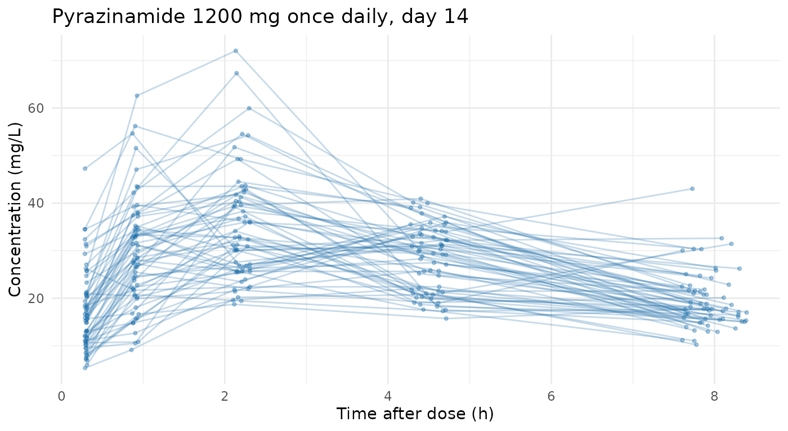

Example: prior-only synthetic PK for pyrazinamide
Source:vignettes/articles/example_prior-pyrazinamide.Rmd
example_prior-pyrazinamide.RmdOne concrete case worked end to end: a synthetic pyrazinamide dataset, 1200 mg orally once daily for two weeks, sampled on day 14. Every number and every choice is shown, including the ones the generator cannot represent.
Prior-only generation reads no data at all — it
takes a public structural model and a trial design and simulates from
those alone — so nothing here needs a privacy argument, and there is no
data argument to supply. See
vignette("synpmx-privacy") for where this sits among the
three method families, and the AVATAR
Algorithm article for the default method, which works the other way
round: from real data, with no model to state.
The cardinal rule for this mode: every number below must come from
somewhere that is not the study being simulated. The values
used here are literature / protocol values for pyrazinamide, recorded in
each object’s source field. If you were to fit a model to a
real study and paste its estimates in here, the real data would reach
the output through the parameters and the “nothing was read” claim would
be false — synpmx_prior() cannot detect that, so the
discipline is yours to keep.
Read the last section before using the output. Four parts of the requested specification cannot be expressed by this generator, and the script does not pretend otherwise.
knitr::opts_chunk$set(collapse = TRUE, comment = "#>", fig.align = "center",
out.width = "100%")
library(synpmx)
has_ggplot2 <- requireNamespace("ggplot2", quietly = TRUE)The specification
| Quantity | Value |
|---|---|
| Structural model | 1-compartment oral, first-order absorption and elimination |
| Ka | 1.31 h-1 |
| CL/F | 3.52 L/h |
| V/F | 28.57 L |
| IIV (log-SD) | Ka 0.620, CL 0.174, V 0.181 |
| IOV (log-SD) | V 0.117 |
| Residual error | proportional 0.22, additive SD 2.41 mg/L |
| WT | N(55.50, 8.40), bounded [30, 100] |
| CD38 | N(36.13, 13.74), bounded [0, 100] |
| GENDER | levels {1, 2}, proportions {0.526, 0.474} |
| Regimen | 1200 mg orally once daily |
| Sampling | after 2 weeks of dosing, at 0.3, 0.9, 2.2, 4.5, 8 h post dose |
Choices not given in the specification, made here and flagged so they are easy to change:
N_SUBJECTS <- 60 # cohort size
SEED <- 20260728 # reproducibility seed
LLOQ <- 0.2 # mg/L, a typical HPLC assay limit for pyrazinamide
DROPOUT <- 0 # no discontinuation modelled
N_DOSES <- 14 # "2 weeks of dosing" at once dailyTwo unit conversions
Both are places where the specification and the package use different parameterisations, so converting rather than pasting matters.
IIV. pmx_structural_model(iiv = ) takes
a CV, while the specification gives
log-SD. For a lognormal,
CV = sqrt(exp(omega^2) - 1).
omega_to_cv <- function(omega) sqrt(exp(omega^2) - 1)
iiv_log_sd <- c(ka = 0.620, cl = 0.174, v = 0.181)
iiv_cv <- omega_to_cv(iiv_log_sd)
knitr::kable(
data.frame(parameter = names(iiv_log_sd),
log_sd = iiv_log_sd, cv = round(iiv_cv, 4)),
row.names = FALSE, caption = "IIV: specification (log-SD) to package (CV)"
)| parameter | log_sd | cv |
|---|---|---|
| ka | 0.620 | 0.6846 |
| cl | 0.174 | 0.1753 |
| v | 0.181 | 0.1825 |
Continuous covariates.
pmx_covariate(range = ) is a single public range that does
double duty: in prior mode the generator draws
rnorm(mean(range), diff(range) / 6) and clips to that same
range. So a range of mean +/- 3 SD reproduces a requested
normal distribution, with clipping falling at 3 SD where it costs about
0.3% of draws.
normal_to_range <- function(mean, sd) c(mean - 3 * sd, mean + 3 * sd)
normal_to_range(55.50, 8.40) # WT
#> [1] 30.3 80.7
normal_to_range(36.13, 13.74) # CD38 -- note the negative lower bound
#> [1] -5.09 77.35The CD38 range comes out negative at the low end, which is not a usable bound for a biomarker. Because the one range fixes both the spread and the clipping, the mean and the non-negativity cannot both be kept alongside the full SD. The mean and the floor at zero are kept, and the SD lands at 12.04 rather than 13.74:
The public inputs
pza_model <- pmx_structural_model(
pk = "1cmt_oral",
typical = c(cl = 3.52, v = 28.57, ka = 1.31),
iiv = iiv_cv,
residual_cv = 0.22,
source = paste(
"Published pyrazinamide population PK parameters; never fitted to the",
"study being simulated."
)
)
pza_model
#> Public structural model
#> PK: 1cmt_oral
#> PD: none
#> typical: cl=3.52, v=28.6, ka=1.31
#> source: Published pyrazinamide population PK parameters; never fitted to the study being simulated.
pza_covariates <- pmx_covariates(
WT = pmx_covariate(
range = normal_to_range(55.50, 8.40),
source = "Protocol-eligible adult weight range; literature mean and SD."
),
CD38 = pmx_covariate(
range = cd38_range,
source = "Literature CD38 distribution; floored at zero."
),
GENDER = pmx_covariate(
levels = c("1", "2"),
source = "Protocol sex categories."
)
)Sampling is requested only after two weeks of dosing, so thirteen
doses carry no samples and the fourteenth carries the full profile.
sampling takes one entry per dose, and NULL
means “no samples after this one”.
post_dose <- c(0.3, 0.9, 2.2, 4.5, 8)
pza_design <- pmx_trial_design(
dose_levels = 1200,
cohort_sizes = N_SUBJECTS,
sampling = c(rep(list(NULL), N_DOSES - 1L), list(post_dose)),
n_doses = N_DOSES,
dose_interval = 24,
source = "Protocol: 1200 mg orally once daily for 2 weeks."
)
pza_design
#> Public trial design
#> doses: 1200 (n = 60)
#> dose times: 0, 24, 48, 72, 96, 120, 144, 168, 192, 216, 240, 264, 288, 312
#> sampling:
#> dose 1: none
#> dose 2: none
#> dose 3: none
#> dose 4: none
#> dose 5: none
#> dose 6: none
#> dose 7: none
#> dose 8: none
#> dose 9: none
#> dose 10: none
#> dose 11: none
#> dose 12: none
#> dose 13: none
#> dose 14: 0.3, 0.9, 2.2, 4.5, 8
#> source: Protocol: 1200 mg orally once daily for 2 weeks.Generate
pza <- synpmx_prior(
pza_model, pza_design,
n_subjects = N_SUBJECTS, seed = SEED,
dropout = DROPOUT, lloq = LLOQ, covariates = pza_covariates
)
str(pza)
#> 'data.frame': 1140 obs. of 17 variables:
#> $ ID : int 1 1 1 1 1 1 1 1 1 1 ...
#> $ TIME : num 0 24 48 72 96 120 144 168 192 216 ...
#> $ NTIME : num 0 24 48 72 96 120 144 168 192 216 ...
#> $ TAD : num 0 0 0 0 0 0 0 0 0 0 ...
#> $ OCC : int 1 2 3 4 5 6 7 8 9 10 ...
#> $ DV : num NA NA NA NA NA NA NA NA NA NA ...
#> $ AMT : num 1200 1200 1200 1200 1200 1200 1200 1200 1200 1200 ...
#> $ RATE : num 0 0 0 0 0 0 0 0 0 0 ...
#> $ EVID : int 1 1 1 1 1 1 1 1 1 1 ...
#> $ CMT : int 1 1 1 1 1 1 1 1 1 1 ...
#> $ DVID : chr NA NA NA NA ...
#> $ MDV : int 1 1 1 1 1 1 1 1 1 1 ...
#> $ CENS : int 0 0 0 0 0 0 0 0 0 0 ...
#> $ DOSE : num 1200 1200 1200 1200 1200 1200 1200 1200 1200 1200 ...
#> $ WT : num 44.5 44.5 44.5 44.5 44.5 ...
#> $ CD38 : num 48.8 48.8 48.8 48.8 48.8 ...
#> $ GENDER: chr "2" "2" "2" "2" ...
#> - attr(*, "pmx_source")= chr "prior"| ID | TIME | NTIME | TAD | OCC | DV | AMT | RATE | EVID | CMT | DVID | MDV | CENS | DOSE | WT | CD38 | GENDER |
|---|---|---|---|---|---|---|---|---|---|---|---|---|---|---|---|---|
| 1 | 0 | 0 | 0 | 1 | NA | 1200 | 0 | 1 | 1 | NA | 1 | 0 | 1200 | 44.463 | 48.751 | 2 |
| 1 | 24 | 24 | 0 | 2 | NA | 1200 | 0 | 1 | 1 | NA | 1 | 0 | 1200 | 44.463 | 48.751 | 2 |
| 1 | 48 | 48 | 0 | 3 | NA | 1200 | 0 | 1 | 1 | NA | 1 | 0 | 1200 | 44.463 | 48.751 | 2 |
| 1 | 72 | 72 | 0 | 4 | NA | 1200 | 0 | 1 | 1 | NA | 1 | 0 | 1200 | 44.463 | 48.751 | 2 |
| 1 | 96 | 96 | 0 | 5 | NA | 1200 | 0 | 1 | 1 | NA | 1 | 0 | 1200 | 44.463 | 48.751 | 2 |
| 1 | 120 | 120 | 0 | 6 | NA | 1200 | 0 | 1 | 1 | NA | 1 | 0 | 1200 | 44.463 | 48.751 | 2 |
| 1 | 144 | 144 | 0 | 7 | NA | 1200 | 0 | 1 | 1 | NA | 1 | 0 | 1200 | 44.463 | 48.751 | 2 |
| 1 | 168 | 168 | 0 | 8 | NA | 1200 | 0 | 1 | 1 | NA | 1 | 0 | 1200 | 44.463 | 48.751 | 2 |
Does it match the specification?
The checks worth making are the ones on quantities that were actually requested.
Two time columns matter here. NTIME is the
nominal (protocol) time and TAD is the
actual time after dose, which the generator jitters
around nominal by visit_window (5% by default) so that
sample times look like a real study rather than a grid. Checking the
schedule means checking nominal time; the last dose falls at hour
24 * (N_DOSES - 1).
roles <- pmx_generated_roles()
obs <- pza[[roles$evid]] == 0 & !is.na(pza[[roles$dv]])
# Nominal time after the qualifying dose, recovered from NTIME and the occasion.
nominal_tad <- pza[[roles$nominal_time]] - 24 * (pza[[roles$occasion]] - 1)
knitr::kable(
data.frame(
quantity = c("subjects", "dose amount (mg)", "doses per subject",
"observations per subject", "sampling occasion",
"nominal times after dose (h)"),
value = c(
length(unique(pza[[roles$id]])),
paste(unique(pza[[roles$amt]][pza[[roles$amt]] > 0]), collapse = ", "),
round(mean(table(pza[[roles$id]][pza[[roles$amt]] > 0])), 1),
round(mean(table(pza[[roles$id]][obs])), 1),
paste(sort(unique(pza[[roles$occasion]][obs])), collapse = ", "),
paste(sort(unique(round(nominal_tad[obs], 2))), collapse = ", ")
)
),
row.names = FALSE, caption = "Design realised in the output"
)| quantity | value |
|---|---|
| subjects | 60 |
| dose amount (mg) | 1200 |
| doses per subject | 14 |
| observations per subject | 5 |
| sampling occasion | 14 |
| nominal times after dose (h) | 0.3, 0.9, 2.2, 4.5, 8 |
first_row <- !duplicated(pza[[roles$id]])
knitr::kable(
data.frame(
covariate = c("WT", "CD38", "GENDER = 1"),
requested = c("mean 55.50, SD 8.40", "mean 36.13, SD 13.74", "0.526"),
generated = c(
sprintf("mean %.2f, SD %.2f", mean(pza$WT[first_row]),
sd(pza$WT[first_row])),
sprintf("mean %.2f, SD %.2f", mean(pza$CD38[first_row]),
sd(pza$CD38[first_row])),
sprintf("%.3f", mean(pza$GENDER[first_row] == "1"))
)
),
row.names = FALSE, caption = "Covariates: requested versus generated"
)| covariate | requested | generated |
|---|---|---|
| WT | mean 55.50, SD 8.40 | mean 54.64, SD 8.15 |
| CD38 | mean 36.13, SD 13.74 | mean 37.26, SD 11.38 |
| GENDER = 1 | 0.526 | 0.367 |
by_time <- split(pza[[roles$dv]][obs], round(nominal_tad[obs], 2))
knitr::kable(
data.frame(
nominal_tad = names(by_time),
n = vapply(by_time, length, integer(1)),
median = round(vapply(by_time, median, numeric(1)), 2),
min = round(vapply(by_time, min, numeric(1)), 2),
max = round(vapply(by_time, max, numeric(1)), 2)
),
row.names = FALSE,
caption = "Concentration (mg/L) by nominal time after dose (h)"
)| nominal_tad | n | median | min | max |
|---|---|---|---|---|
| 0.3 | 60 | 15.77 | 5.33 | 47.26 |
| 0.9 | 60 | 28.48 | 9.13 | 62.59 |
| 2.2 | 60 | 32.71 | 18.71 | 72.05 |
| 4.5 | 60 | 29.32 | 15.72 | 40.93 |
| 8 | 60 | 17.77 | 10.21 | 43.02 |
plot_data <- data.frame(
id = as.character(pza[[roles$id]][obs]),
tad = pza[[roles$tad]][obs],
dv = pza[[roles$dv]][obs]
)
ggplot2::ggplot(plot_data, ggplot2::aes(tad, dv, group = id)) +
ggplot2::geom_line(alpha = 0.25, colour = "#1B6CA8") +
ggplot2::geom_point(alpha = 0.35, size = 0.8, colour = "#1B6CA8") +
ggplot2::labs(
x = "Time after dose (h)", y = "Concentration (mg/L)",
title = "Pyrazinamide 1200 mg once daily, day 14"
) +
ggplot2::theme_minimal()
What this does and does not represent
Prior-only generation exists to produce structurally correct data for pipeline and model-code development. It is not a reimplementation of the source model, and four parts of the specification have no representation in it. None of them fails loudly, so they are listed here rather than left to be discovered.
1. Covariate effects are absent. The requested WT
exponents (0.75 on CL/F, 1 on V/F), the GENDER effect on CL/F (-0.40),
and the CD38 effect on CL/F (-0.22) are not applied.
pmx_structural_model() has no covariate-effect argument:
subject parameters are drawn as typical value times lognormal IIV, and
covariates are drawn independently. WT, CD38,
and GENDER are therefore columns of plausible numbers with
no relationship to the concentrations in the same row.
This is by design — R/covariates.R states that covariates
exist so covariate-handling pipeline code has something to run against,
and that fidelity is secondary — but it means this dataset cannot be
used to check whether a covariate model recovers these effects. It would
recover nothing.
2. IOV is absent. The requested inter-occasion variability on V (log-SD 0.117) is not represented; the generator draws one parameter vector per subject for the whole study. With sampling on a single day this is a small omission here, but it would matter if the schedule were extended across occasions.
3. Residual error is proportional only.
residual_cv = 0.22 carries the proportional part. The
additive component (SD 2.41 mg/L) has no argument and is dropped, so low
concentrations are less noisy than specified. With sampling ending at 8
h and concentrations staying well above the additive scale, the
practical effect is modest — but at a trough it would not be.
4. GENDER proportions are uniform. In prior mode a categorical covariate is drawn with equal probabilities; the level set is public but the proportions are not settable. The draw probability is therefore 0.500 rather than the requested 0.526, and the realised fraction in any one run wanders around 0.5 by ordinary sampling noise — at 60 subjects one standard error is about 0.065, so the table above can sit well away from either number without anything being wrong. If the exact split matters, overwrite the column after generation.
Also note the CD38 SD compromise described above: 12.04 rather than 13.74, in exchange for a floor at zero.
If the covariate–parameter relationships in point 1 are the thing you
actually need — to test a covariate model, rather than to exercise
pipeline code — then prior-only generation is the wrong tool, and either
an explicit simulation in rxode2/nlmixr2 or
synpmx_avatar() on real data would serve better.